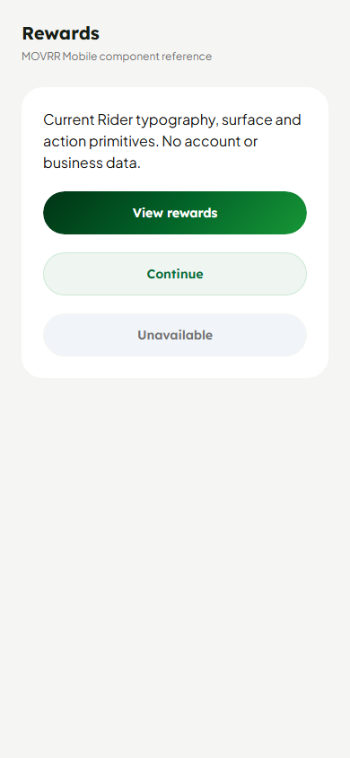
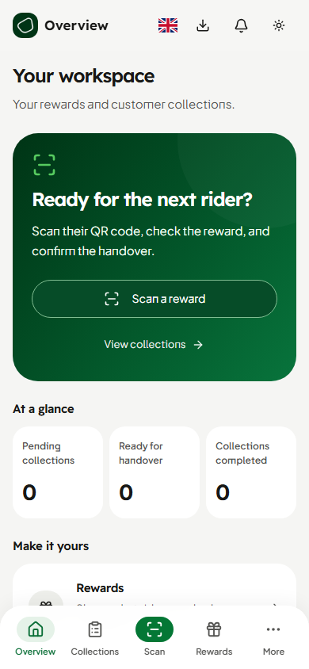
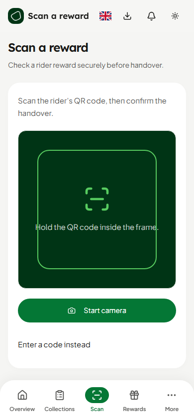

Rider: actual current Button and ScreenHeader source through declared React Native Web / Paper / Expo adapters, with no account or business data. Partner: actual application routes using an isolated session and canonical localhost command bridge. Browser renders at 390 × 844. No physical-device or production merchant acceptance is claimed.


